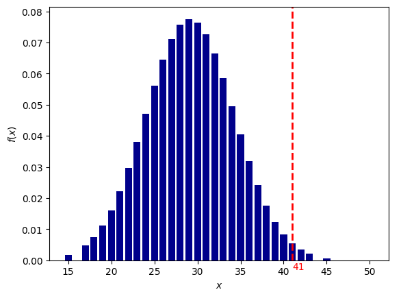
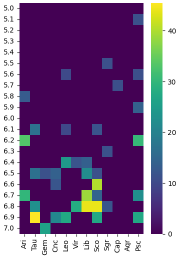
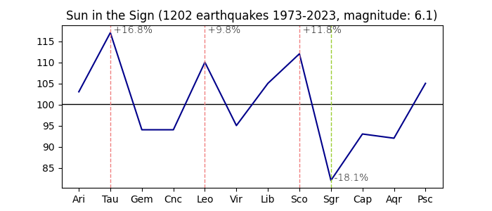
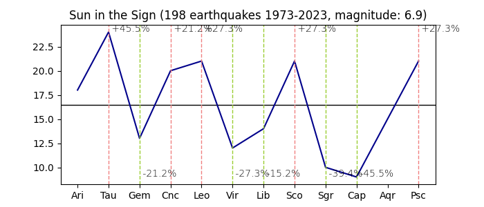
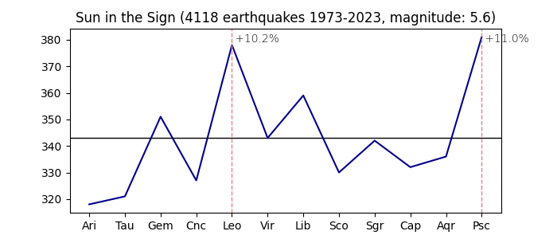
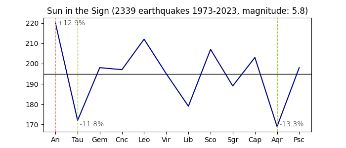
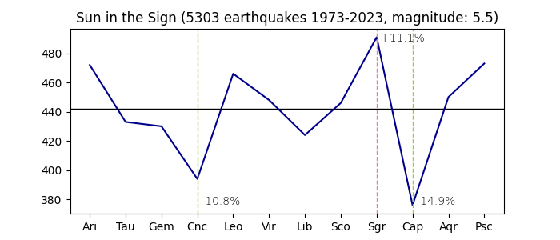
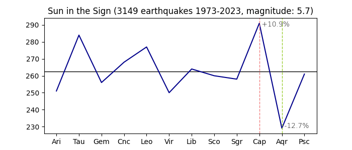
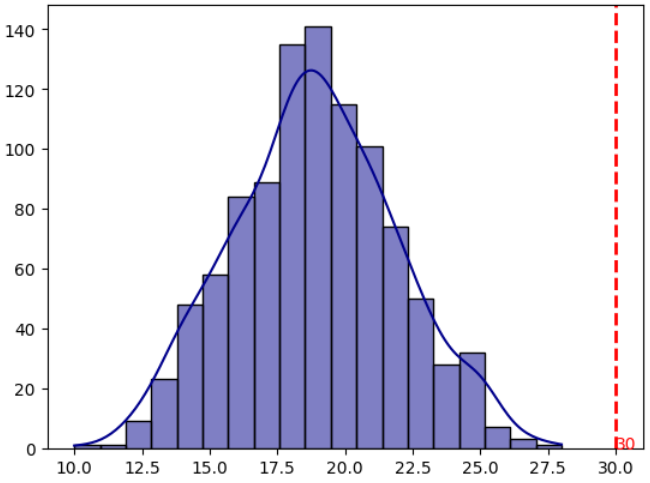

Основные нюансы исследования землетрясений:
Цель исследования:
- Поиск закономерностей между положением планет и возникновением землетрясений
- Возможность прогнозирования землетрясений с помощью астрологии
Методы исследования:
- Расчет отклонения от среднего
- Расчет вероятности события
Ход исследования:
| Текущий прогресс: |
|
60%
|
Были использованы данные по землетрясениям с 1973 по 2023 год:
| Магнитуда | кол-во земле трясений |
| 5 | 18368 |
| 5.1 | 14519 |
| 5.2 | 11613 |
| 5.3 | 8760 |
| 5.4 | 7012 |
| 5.5 | 5310 |
| 5.6 | 4126 |
| 5.7 | 3151 |
| 5.8 | 2339 |
| 5.9 | 1980 |
| 6 | 1643 |
| 6.1 | 1202 |
| 6.2 | 865 |
| 6.3 | 755 |
| 6.4 | 569 |
| 6.5 | 442 |
| 6.6 | 351 |
| 6.7 | 294 |
| 6.8 | 225 |
| 6.9 | 198 |
| 7 | 152 |
Исходные данные (кол-во землетрясений):
| Магнитуда | Ari | Tau | Gem | Cnc | Leo | Vir | Lib | Sco | Sgr | Cap | Aqr | Psc |
| 6.6 | 29 | 26 | 26 | 33 | 31 | 28 | 26 | 41 | 32 | 32 | 20 | 27 |
Будем пользоваться двумя методами для поиска отклонений:
- Отклонение от среднего
- Расчет вероятности через функцию Лапласа
| Магнитуда | Ari | Tau | Gem | Cnc | Leo | Vir | Lib | Sco | Sgr | Cap | Aqr | Psc |
| 6.6 | -0.9% | -11.1% | -11.1% | 12.8% | 6.0% | -4.3% | -11.1% | 40.2% | 9.4% | 9.4% | -31.6% | -7.7% |
Итак, для более равномерного распределения сгенерируем 1000 случайных выборок по 351 дате в диапазоне 1973-2023 год (в каждом году столько дат, сколько было землетрясений магнитудой 6.6 баллов в указанный год):

Что показывает этот график?
На графике отображено насколько маловероятно получить 41 попадание (из 351 возможных) Солнца в знак Скорпион случайно генерируя даты событий.
| Магнитуда | Ari | Tau | Gem | Cnc | Leo | Vir | Lib | Sco | Sgr | Cap | Aqr | Psc |
| 6.6 | 1/12 | 1/15 | 1/15 | 1/17 | 1/13 | 1/13 | 1/15 | 1/184 | 1/15 | 1/15 | 1/62 | 1/14 |
Посчитаем отклонения во всех категориях магнитуд от 5 до 7 баллов; у нас получится график, в котором светлыми квадратиками отмечены подходящие условию критерии:

- Лидеры по количеству землетрясений - Скорпион и Рыбы (в астрологии - представители водной стихии).
- Лидеры по минимальному количеству землетрясений - Водолей (0 категорий) и Козерог (1 категория с магнитудой 5.7 баллов).
- Водолей - cамый "миролюбивый" знак (не удалось обнаружить какое-либо значимое отклонение)
При магнитудах 6.1 и 6.9 баллов землетрясения чаще происходят в знаках "фиксированного креста" (Телец, Лев, Скорпион):


Землетрясения менее 6 баллов чаще происходят в знаках: Рыбы, Овен, Лев, Стрелец, Козерог:




Что такое график нормального распределения и как он строится:
1. Записываем год и месяц, в которые происходили землетрясения с определенной магнитудой, допустим у нас получился список, состоящий из 11613 дат.
2. Для каждой даты рассчитываем аспекты и суммируем общее количество по каждому из аспектов, допустим у нас получится 1156 аспектов Секстиль Марс-Плутон.
3. Сгенерируем 11613 случайных дат событий, в каждом месяце года будем генерировать столько дат, сколько в этот период было событий с землетрясением.
4. Для каждой случайной даты из списка рассчитаем аспекты и просуммируем их общее количество, допустим у нас получится 1056 аспектов Секстиль Марс-Плутон.
5. Повторим пункт 3-4 1000 раз подряд (чем больше - тем лучше, точнее будет распределение), у нас получится 1000 выборок по 11613 дат со случайными событиями и суммой аспектов для каждой такой выборки.
Отобразим на графике получившийся результат. У нас получится график нормального распределения, где синие столбики - количество выпавших аспектов в каждой случайно сгенерированной выборке, а красная пунктирная линия - количество аспектов в реальной выборке.
По центру графика располагается так называемое мат. ожидание - величина, имеющая статистически наиболее вероятную частоту появления, т.е. это самый частый вариант, для аспекта Секстиль Марс-Плутон в случайно сгенерированных датах событий она имеет величину 1056, отклонение от этой величины влево или право называется стандартным отклонением и для нашего случая имеет величину 19. Количество аспектов Секстиль Марс-Плутон в выборке с реальными землетрясениями составляет 1156 и отклоняется от средней величины более чем на 5 сигм (подробное описание методики расчета можно найти в исследовании Youtube влоггеров)
Этот график демонстрирует, что случайно генерируя даты событий мы не сможем получить такое же количество аспектов, которое встречается в реальных датах землетрясений. Иными словами землетрясения происходят не случайным образом.
Теперь взглянем, какие аспекты при землетрясениях встречаются аномально часто:
вершину таблицы возглавили 2 аспекта-лидера:
Еще один из методов исследования - сбор статистики не по количеству повторяющихся в каждой категории магнитуд аспектов, а по процентному отклонению количества землетрясений с указанным аспектом от общего количества, например: в категории магнитут 7 баллов аспект "Секстиль Солнце-Юпитер" из 152 общих случаев землетрясений встречается в 30 случаях, что составляет более 19%, данный аспект имеет вероятность 1/6030 относительно случайно сгенерированной выборки, график нормального распределения:

Топ 5 аспектов по процентному отклонению:
Данные для исследования можно загрузить из репозитария проекта на Github
Страница будет обновляться по мере поступления новой информации.
Если у вас есть замечания или предложения по дальнейшему ходу исследований, просьба направлять их на почту: magentrum собака gmail точка com.